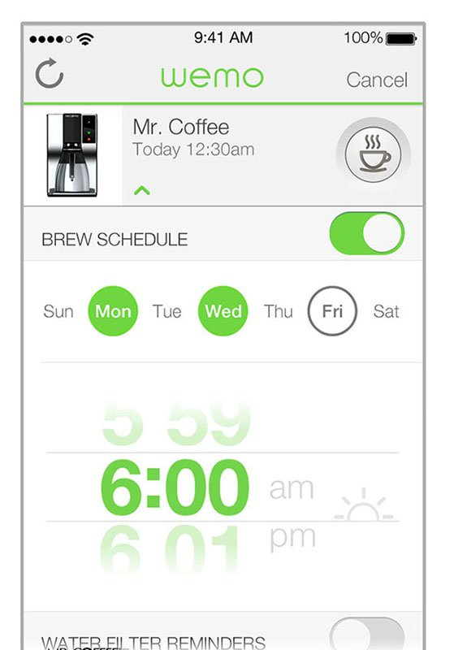

The Guru
Tuesday • February 4th 2020 • 10:29:57 pm
Keyboards & Command Line Interfaces
Crash Course Computer Science
Watch the Full Playlist of 41 videos.
A Short Introduction To Commands
A command is a program made easy to execute. In other words by turning a
program into a command, the programmer standardizes the execution and
customization of the program.
Usually programs need compilation, or an interpreter, they need some
libraries. Often programs may need to be configured somehow, be it a
configuration file, or just editing code. Programs may be hard to run,
because every program is different.
When a programmer decides to turn his program into a command, something
wonderful happens. The programmer adds a bunch of stuff to his program to
make it into a command, and thus standardizes the way the program is ran
and customized.
Commands At A Glance
Here is what a command really looks like:
command-name --some-argument value-of-the-argument
gmail --recipient alice@aol.com --subject "I can't even!" --message "I
can't freaking believe it, commands are cool, rawr!"
Commands Can Do Anything
Commands usually come in groups, for example there is a group of commands
that manage files and directories, a group of commands that compress files,
or download files across the internet.
Getting Around in the Unix Command Line Interface
Full Raspberry Pi Tutorial Playlist
Full Raspberry Pi Tutorial Playlist »
File Management Commands
Manage files and directories with touch, ls, cp, mkdir,
rmdir, mv, and rm to name a few. If you use a file manager
with a graphic user interface (GUI), then you don't need to worry about
these.
File Compression Commands
A group of commands for compressing files to save space gzip,
tar, and bzip2 to name a few.
File Download Command
Some commands are so good at what they do there is only a couple of them
wget and curl are a good example of that. cURL downloads files
really well, it is also very frequently used for debugging or testing
web-servers that serve files, it is a very efficient program. wget is
awesome at resuming downloads and downloading large files, it actually has
a feature that not only downloads a web page, but also all the images and
other web pages that are linked to it.
There are also some really eyebrow raising commands like youtube-dl
which comes with an --extract-audio argument, meaning, it will make an mp3
out of a video.
I don't know what Alphabet's Terms of Service state on the subject of
downloading their data. I don't recommend you use this command, unless you
familiarize yourself with their Terms of Service, specifics of downloading
content with third-party tools, and own the content yourself. Note that it
is not just a YouTube account that may get suspended, but all the rest too,
gmail and google docs, stuff on your android phone, etc.
Here is what the command would look for a YouTube Creator hoping to make a
backup of a particular video.
youtube-dl https://www.youtube.com/watch?v=YOUR\_VIDEO\_ID
And here is the code for saving just the audio it self, this is useful for
making an audio only version of an adventure video or remixing your content
in a song.
youtube-dl --extract-audio --audio-format mp3
https://www.youtube.com/watch?v=YOUR\_VIDEO\_ID
Look how simple and easy to read. Commands can save you from thousands of
mouse clicks and hours of annoying, repetitive work. Commands are a
beautiful invention. Graphic user interfaces are helpful when learning
computers, but eventually they will force you into a world of clicks.
Commands Are Friends!
It is so awesome to just open a terminal, type in gmail alice@aol.com -s
"About Cybertruck" -m "So did you get the $69K build?" and go have your
Irish Breakfast Tea (or an Earl Gray with an extra lump of sugar and an
extended pinkie) a whole 35 seconds earlier, because you didn't have to
wait for the mail window to open and start sucking memory whilst inspecting
its innards.
How To Hack Time

Simplicity Lost
Originally, the beauty of commands was in being predictable, readable, and
not causing surprises. UNIX style operating systems, are well thought out.
But, people will cram a lot more than they should, and it gets out of
control, here is a mild example of mixing some video files with the ffmpeg
command.
ffmpeg -i test1.avi -i test2.avi -vcodec copy -acodec copy -vcodec copy
-acodec copy test12.avi -newvideo -newaudio
I have some guesses as to what the ff stands for. You can visit the manual
page here: https://linux.die.net/man/1/ffmpeg
Pipes
There is a feature in the command world, that can deal with high
complexity, and that is the pipe. Meaning two commands can be connected by
a pipe in the following manner
print "hello world" | uppercase
This would result in changing all text to uppercase, and printing it on the
screen.
HELLO WORLD
Redirects
There is also a feature of pipes that creates files and that is the greater
than symbol ">".
print "hello world" | uppercase > greetings.txt
This would result in changing all text to uppercase too, but instead of
seeing "HELLO WORLD" on the screen we’d see it in the file named
greetings.txt
User Interface
While Pipes and Redirects of the Command Line are often enough. A number of
Graphical Pipe Editors exists as well, Node-RED is a nice example.
Node-RED
Recap and Summary
In The Wizard chapter we learned not to confuse the operating system, with
the user interface; as those are two separate kinds of computer programs.
Now we learn that UNIX is an operating system with a user interface
classified as the Command-line interface, let us take a closer look at
the command-line interface.
Uniformity of Commands
Once you learn the shape that a command can take, you will be able to use
any command on any system.
Let us proceed with an imaginary command "print" that has some extra
features.
Command Documentation
Most well behaved commands can be executed with the --help argument, or the
-h flag to print some helpful documentation.
print --help
Popular commands will come with manual pages that can be read with the man
command. In this case we would execute: man print
The Simplest Form
In the following example there is one argument "hello world". Without
quotes the command would see two arguments "hello" and "world". Quotes are
used to join two or more things together.
print "hello world"
The Extended Form
In the next example we have a Boolean flag "-u" meaning enable underline
mode. To disable the underline mode, you simply remove the -u. Then we have
the extended argument "--format" followed by a directive "capitalize".
Supported directives can be found in documentation.
print -u --format capitalize "hello world"
To make things easier to type, most commands allow short form of extended
arguments, so --format can become -f.
print -u -f capitalize "hello world"
Conversely, most one letter arguments/flags have an extended form that
begins with two hyphens. Note how -u changed to --underline.
print --underline -f capitalize "hello world"
For clarity and readability, I recommend using extended forms.
print --underline --format capitalize "hello world"
Why would anyone want to apply a Command-line interface to something?
Because of the uniformity of command syntax. Once you know how to run one
command, you know how to run them all. You just need to pull up the
documentation to see what all the commands are and what arguments they
accept.
What other complex systems can the Command-line interface be successfully applied to?
Any complex system can be controlled through a command-line interface.
Your Car
lights --highbeams on
lights --highbeams off
dashboard --engine-light off
glovebox --lock passw0rd1
glovebox --unlock passw0rd1
Your House
lights --off
stove --off
thermostat --heat 72
coffeemaker --on 6AM
Office Shenanigans
Please read github.com/NARKOZ/hacker-scripts Which "hack" this poor
bastard's coffemaker, soon to be ruined romantic life, a particularly needy
customer, and alcoholism. Based on a true story, apparently.
Please note how the community of geeks that love this story came together
and started re-creating these "hacker" scripts in the programming languages
they favor; probably out of sadness.
Here is the Node.js Version of fucking_coffee.js. Note that once the
telnet connection is established at line number 22, we begin using the
coffeemaker command-line interface: sys brew (line 26), sys pour (line 32).
Don't think of the coffeemaker as running UNIX, just think of it as it
being controlled by a command line interface somewhere.
Any machine with a button or two is a system with enough complexity to
benefit from a command-line interface.
Note how you have never programmed a coffeemaker before, and yet you know
precisely - and may even remember for months to come - the commands "sys
brew" and "sys pour".
sys brew
sys pour
It seems sys is a single command that looks at the first text argument.
Executing sys -h would probably print:
Coffemaker Help ---- -h / --help print this text -v / --verbose print
debugging information -b / --brew / or simply brew start brewing -p /
--pour / or simply pour start pouring -r / --reboot / or simply reboot
reboot the system ...
Lack of proper etiquette, and using text (brew) instead of arguments
(--brew/-b) can be an indication of sys being a script that does not take
the time to parse anything it just looks at the first thing after the
command name. It is actually difficult to parse arguments (-b/--brew), it
takes no effort at all to use raw text (brew).
Smart Coffeemaker
Mr. Coffee Smart Coffeemaker enabled with WeMo can be controlled with the bootleg node.js client for WeMo found on github. As a bonus, you can control burn down you entire house, plus the Coffeemaker.
Smarter Coffeemaker

I was unable to locate the coffeemaker from the story. Personally I'd just
stick a Raspberry PI into a cheap one and make my own sys command
(with proper argument parsing).
If you are courageous enough to do this, might as well install a small web
server, stream the coffeemaker using the camera board module, and
let people brew you one for a small fee of $9.95 while you [blog about
the experience](https://gohugo.io/getting-started/quick-start/) on the PI it self.